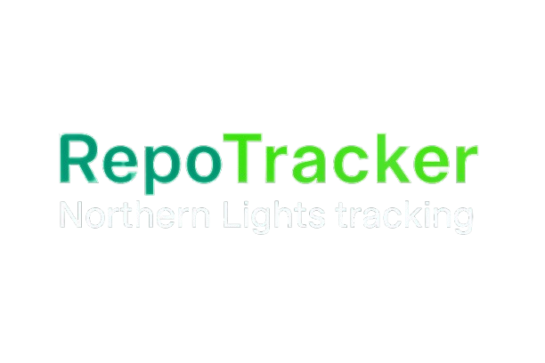

Explore the Map: Tap any location on the map to see a detailed real-time aurora and cloud cover forecast for that spot.
Quick Tools (⚙️): Tap the settings icon on the right to open your toolkit:
Stay Connected (📱): Tap the phone icon to follow our real-time updates on Instagram and TikTok or support the project with a coffee.
Note: The KP-index (bottom left) updates automatically. If it disappears, tap the small "KP" tab to bring it back.
Click anywhere on the map or use the "Can i see the Northern Lights" -button to see the aurora forecast for that location.
Note: Cloud cover can affect visibility even if aurora activity is strong.
RepoTracker combines geomagnetic measurements, solar wind speed, the Kp index, and cloud cover data into one clear view.
The colors on the map indicate the probability and intensity of the northern lights: red (weak), yellow/orange (good chance), and green (very strong activity) and indicate a higher probability. Cloud cover may obstruct visibility.
The Northern Lights occur most often from September to March, especially between 9 p.m. and 2 a.m. Clear skies, high solar wind speeds, and low light pollution significantly improve the chances of seeing them.